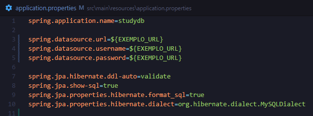
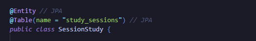
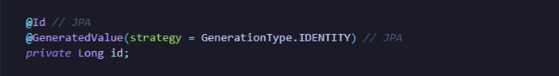
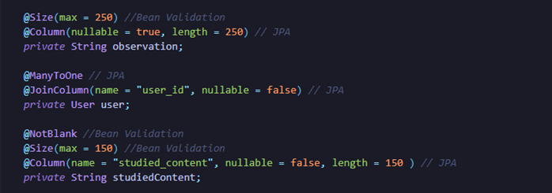
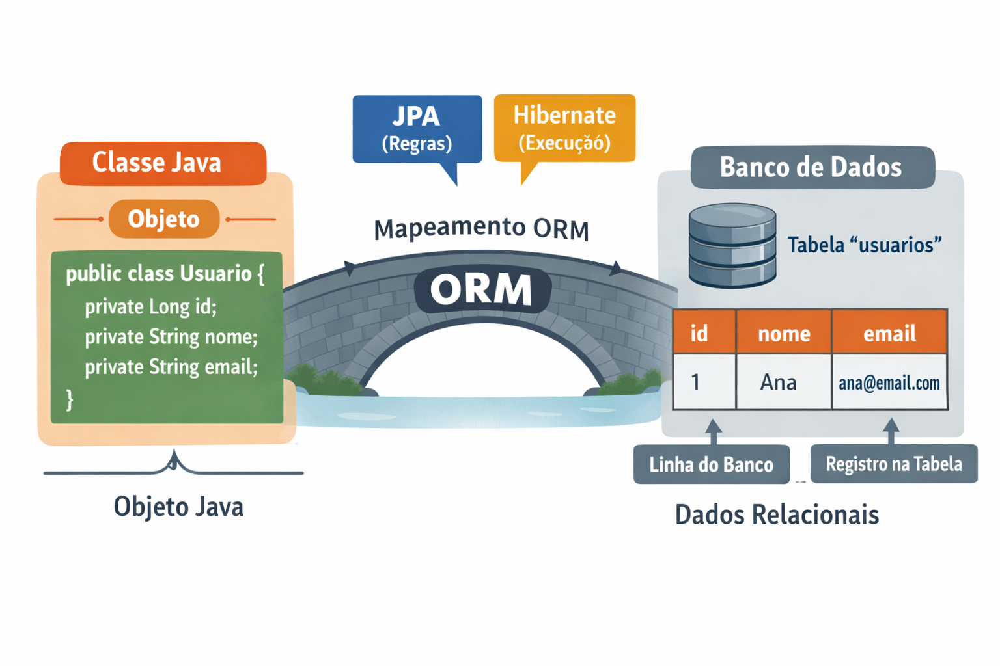
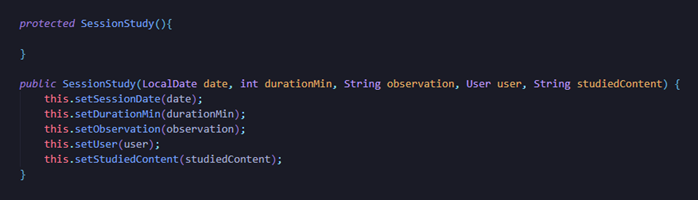

Após um tempo, algumas matérias e um curso depois, entrei de vez no mundo da tecnologia. Confesso que programar, no começo, me parecia muito abstrato, mas, à medida que consolido minha lógica de programação, aprender uma linguagem nova se torna algo natural. Afinal de contas, sabemos como precisamos escrever; em qual língua escrevemos se torna apenas um detalhe pesquisável.
Para minha primeira experiência construindo de fato um sistema e aprendendo na marra com as dificuldades que um projeto real pode trazer, escolhi Java. Eu tinha acabado de fazer um curso muito bom de POO do Curso em Vídeo, que, pela didática e pela base que me deu, já foi suficiente para me fazer sentir vontade de começar a escrever linha por linha para valer dessa vez. E foi isso que eu fiz: com confiança ou sem, eu simplesmente comecei, porque nessa fase o mais importante é aprender.
Do Excel ao primeiro sistema
A ideia da aplicação, na verdade, era bem simples. Dias antes, eu tinha feito uma tabela em Excel para monitorar meus horários de estudo e acompanhar minha evolução. Como eu estava mexendo nisso por conta própria, comecei a adicionar algumas coisas, como gráficos para visualizar melhor os dados e até uma barra de EXP, em que eu subiria de nível conforme acumulasse experiência. Então pensei: por que não transformar isso em uma aplicação web? Além de ser algo útil para mim, eu ainda treinaria várias coisas que precisava aprender.
Então segui com a ideia, comecei a organizar o projeto e as classes e, pesquisando, vi que eu teria que lidar com coisas como services. Num primeiro momento, pensei: “Vi interfaces, aparentemente deve ser parecido”. Mas não era bem assim. A interface define um contrato de métodos que uma classe ou service terá que cumprir. Já o service entra mais como o lugar onde ficam as regras de negócio.
E sim, eu me perguntei qual seria a diferença entre implementar certos métodos em um service ou dentro da própria classe. A resposta foi ficando prática com o tempo. A classe está mais ligada ao estado e ao comportamento direto do objeto. Se o objeto fosse uma TV, por exemplo, ligar e desligar fariam sentido ficar na própria classe. Já regras como criar usuário, validar certas operações do sistema ou salvar senha em hash fazem mais sentido em uma camada de service, porque não dizem respeito só ao estado de um objeto, mas ao funcionamento do sistema como um todo.
Voltando ao assunto, mesmo sem necessidade real, resolvi criar uma interface para cada service, mais por prática mesmo, para fixar o conteúdo. Então desenhei os gráficos UML logo no primeiro dia, pensando em interfaces, services e classes. Inicialmente, eram cinco classes, porque eu queria dividir bastante as responsabilidades. Só que acabei dando um passo maior que a perna e percebi que estava criando redundância demais. No fim, entendi uma coisa importante: o foco não era enfiar complexidade no projeto, mas conseguir fazer um CRUD básico direito para destravar, subir os primeiros degraus e evoluir de forma sólida. Então removi duas classes do projeto.
Nos dias seguintes, fui montando o esqueleto do programa, mas, antes de sair digitando qualquer linha de código, fui pesquisar como isso costuma funcionar em projetos reais. Foi aí que vi padrões de pastas, percebi que precisaria de um gerenciador de dependências e escolhi o Maven, justamente por ser o mais utilizado e o mais indicado para começar.
Servidor, banco e variáveis de ambiente
Depois de instalar tudo, chegou a hora de mandar o famoso Hello World para o servidor local. Em teoria, era simples: bastava fazer um controller, que não vou aprofundar agora porque ainda vou falar melhor sobre ele depois. Só que já comecei apanhando aí, porque o servidor não conectou de primeira. Então tive que parar, pesquisar mais uma hora e resolver alguns problemas de compatibilidade antes de seguir.
Com isso resolvido, fui configurar o application.properties, que é um dos arquivos principais, já que nele ficam várias configurações que a aplicação usa, inclusive as do banco de dados. Depois de mais uma boa confusão, bagunçar as credenciais do MySQL e passar quase duas horas tentando redefinir uma senha que eu mesmo tinha trocado sem querer, finalmente consegui colocar de pé o acesso ao banco. Aproveitei esse momento e já criei um usuário dedicado só para o projeto, o que acabou sendo bem melhor do que usar o usuário principal do banco para tudo.
Nesse processo, também resolvi outra questão importante: as credenciais de acesso estavam direto no código. Como minha intenção já era subir esse projeto para o GitHub, deixar credenciais no código claramente é uma péssima ideia. Então decidi fazer da forma certa e utilizar variáveis de ambiente; assim, a aplicação passa a ler esses dados do ambiente em que está rodando. Isso deixa o projeto mais seguro, mais organizado e muito mais preparado para crescer.

Outra configuração importante foi o validate. Escolhi esse modo porque, naquele momento, ele me pareceu a opção mais segura. Como ele apenas valida o schema e verifica se as entidades estão batendo com a estrutura do banco, sem tentar alterar nada automaticamente, preferi seguir por esse caminho. Isso foi ainda mais importante porque, em tentativas anteriores de rodar o código, eu já tinha conseguido duplicar coisas no banco. Então, enquanto eu ainda estava tentando estabilizar o projeto, fazia muito mais sentido deixar o Hibernate apenas verificar a compatibilidade, sem sair criando, alterando ou removendo estruturas automaticamente.
JPA, Hibernate e o papel do ORM
Agora sim entra outra parte importante da história. E aqui tem um detalhe curioso: eu não configurei o acesso ao banco antes de tudo. Na verdade, isso veio depois de eu já ter escrito boa parte do código. Mesmo assim, algumas explicações precisam aparecer fora da ordem, até porque, olhando agora, talvez essa devesse ter sido a ordem correta desde o começo.
É justamente aqui que entram dois nomes que aparecem o tempo todo quando se fala em persistência no Java: JPA e Hibernate.
Quando comecei a estudar essa parte, uma das coisas que mais precisei entender foi que a aplicação não conversa com o banco “na unha” o tempo todo. Ou seja, eu não preciso tratar manualmente cada operação como se estivesse lidando direto com linhas, colunas e comandos SQL o tempo inteiro. Em vez disso, eu trabalho com objetos Java, e existe uma camada que faz a ponte entre esses objetos e os dados relacionais do banco.
Foi aí que o conceito começou a fazer sentido para mim: de um lado está a aplicação, que pensa em classes, atributos e objetos; do outro está o banco, que pensa em tabelas, colunas e registros. São dois mundos diferentes, e alguém precisa traduzir um para o outro. Esse é justamente o papel do ORM, o mapeamento objeto-relacional.
Na prática, o ORM permite que uma classe Java represente uma tabela, que os atributos dessa classe representem colunas e que cada objeto represente um registro dentro do banco. Então, em vez de eu pensar primeiro na tabela, posso pensar primeiro no objeto, o que fica muito mais natural de enxergar mentalmente.
Dentro disso, o JPA entra como a especificação, ou seja, como o conjunto de regras e padrões que definem como esse mapeamento deve ser feito. Já o Hibernate entra como a ferramenta que pega essas regras e faz o trabalho acontecer de verdade. Em outras palavras, o JPA diz como a ponte deve ser construída, e o Hibernate é quem efetivamente ajuda a aplicação a atravessar essa ponte.
Anotações na prática
Para explicar isso, vou usar uma classe do projeto, a SessionStudy, e colocar prints ao longo do texto para deixar essa parte mais visual.
Foi nessa etapa que comecei a enxergar melhor como uma classe Java deixa de ser apenas uma classe comum e passa a representar algo que realmente será salvo no banco de dados. No caso da SessionStudy, isso começou com o uso de @Entity, que é a anotação que informa que aquela classe deve ser tratada como uma entidade persistente. Em outras palavras, ela passa a representar um tipo de dado que o sistema poderá armazenar.
Junto com isso, usei também @Table(name = "study_sessions"). Essa anotação serviu para definir explicitamente o nome da tabela no banco. Isso foi importante porque, antes de entender melhor esse ponto, eu já tinha rodado o código e duplicado tabela por conta da diferença entre convenções de nomenclatura: no Java, o padrão costuma ser camelCase; no banco, normalmente se usa snake_case. Então, em vez de deixar isso implícito, preferi deixar o mapeamento controlado desde o começo.

Outro aprendizado importante apareceu no campo id. Nele, usei @Id para marcar que aquele atributo seria o identificador principal da entidade, ou seja, a chave primária. Além disso, acrescentei @GeneratedValue(strategy = GenerationType.IDENTITY), informando que esse valor seria gerado automaticamente pelo próprio banco. Na prática, isso significa que, ao criar uma nova sessão de estudo, eu não preciso informar manualmente o identificador, porque o banco se encarrega disso.

Nos demais campos, a anotação que mais apareceu foi @Column, justamente porque ela lembra bastante a lógica de definir formato, condição e restrição na própria construção do banco. No campo sessionDate, por exemplo, usei @Column(name = "session_date", nullable = false). Com isso, deixei definido o nome da coluna no banco e também que aquele valor não poderia ser nulo. Além do mapeamento, isso já comunica uma regra importante: uma sessão de estudo precisa ter uma data.
No campo durationMin, usei @Column(nullable = false), reforçando que a duração da sessão também é obrigatória. Já em observation, a configuração foi diferente: @Column(nullable = true, length = 250). Nesse caso, a ideia foi deixar a observação como um campo opcional, mas com limite de até 250 caracteres. Em studiedContent, usei @Column(name = "studied_content", nullable = false, length = 150), definindo o nome da coluna, a obrigatoriedade e o limite máximo de caracteres. Esse tipo de configuração ajuda a deixar a entidade muito mais alinhada com o que o sistema realmente espera receber e armazenar.
Além dos campos simples, também houve a necessidade de representar o vínculo entre uma sessão de estudo e um usuário. Para isso, usei @ManyToOne, indicando que várias sessões podem pertencer ao mesmo usuário. Junto com essa anotação, usei @JoinColumn(name = "user_id", nullable = false), definindo a coluna responsável por fazer essa ligação no banco. Na prática, isso significa que cada sessão precisa estar associada a um usuário, e essa relação será registrada por meio da chave estrangeira user_id.

No meio disso tudo, descobri outra camada importante: as anotações de validação, que já apareciam nos prints comentados no código como Bean Validation. Enquanto as anotações de persistência dizem como os dados serão armazenados e mapeados no banco, as validações ajudam a garantir que esses dados já cheguem corretos antes mesmo de serem persistidos.
As que utilizei foram @NotNull, @Positive, @Size e @NotBlank. No campo sessionDate, por exemplo, usei @NotNull para deixar claro que a data não pode estar ausente. Em durationMin, usei @Positive, garantindo que a duração seja maior que zero. Em observation, usei @Size(max = 250), reforçando o limite de tamanho já pensado para esse campo. E em studiedContent, usei @NotBlank junto com @Size(max = 150), exigindo que o conteúdo estudado seja preenchido de forma válida, sem ficar vazio nem ultrapassar o limite definido.

Ah, e antes que eu me esqueça de novo, como aconteceu antes de executar o código e dar errado porque não fiz, também é preciso deixar um construtor vazio na entidade, porque o Hibernate precisa disso para conseguir instanciá-la durante o processo de persistência. E sim, obviamente dá para ter dois construtores; isso entra na ideia de sobrecarga, o overloading.

Fechando
Esse projeto me ensinou muito mais do que simplesmente fazer um CRUD. Aprendi lições importantes, como a necessidade de planejar o banco antes de começar tudo, aproveitar configurações para deixar o código mais conciso, usar aquela colinha visual para alinhar melhor código e banco, entender melhor o papel das anotações de validação, do JPA e do Hibernate, configurar dependências com mais cuidado, usar variáveis de ambiente da forma certa e questionar o excesso de complexidade, mesmo quando ele aparece disfarçado de organização.
É claro que nada disso ficou gravado de forma definitiva na minha cabeça ainda. São muitas coisas ao mesmo tempo. Mas escrever essa postagem me obriga a pesquisar melhor, interpretar melhor e organizar melhor aquilo que estou tentando aprender. E isso, por si só, já faz parte do processo.
Também é preciso ter resiliência, porque às vezes só para iniciar um projeto, subir um servidor local e mandar um Hello World já aparece erro suficiente para travar uma tarde inteira. Só que isso também é aprendizado.
E com tudo isso, posso concluir uma coisa com tranquilidade: a minha evolução na programação vai ser diretamente proporcional à quantidade de erros que eu conseguir acumular pelo caminho.
Fontes
- Jakarta Persistence 3.2 — página oficial da especificação
- Jakarta Persistence 3.2 — PDF oficial da especificação
- Jakarta Persistence 3.2 — documentação da API
- Introdução ao Jakarta Persistence — tutorial oficial
- Hibernate ORM — User Guide oficial
- Hibernate ORM — Getting Started oficial
- Hibernate ORM — Quickstart oficial